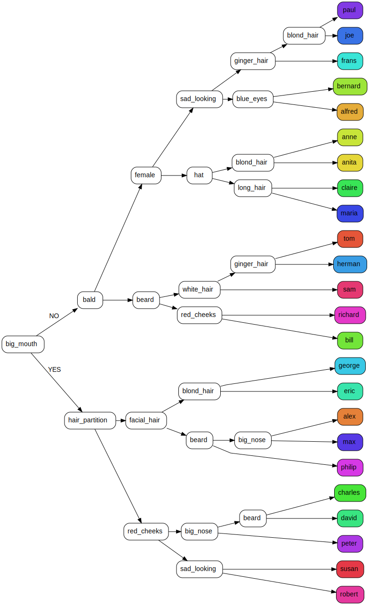

import pandas as pd
import numpy as np
import graphviz
import re
from ipywidgets import GridspecLayout, HTML, VBox, HBox, Button, Label
from sklearn.tree import DecisionTreeClassifier, export_graphvizIn the scikit-learn machine learning library, the predict method is used to make predictions on new data with a fitted model. This method expects the input data to have the same number of features as the data that the model was trained on. This makes sense for many models, but not necessarily for decision trees. Since decision trees look at one feature at a time, they may only need a subset of all features to make a prediction.
If we want to provide solely the features that are actually considered when making a prediction, we will need to traverse a decision tree iteratively.
To show you how this works, we’ll fit a decision tree model to a dataset of Guess Who character features. After fitting the model, we can traverse the resulting tree to make a prediction about the character’s identity.
Wait, how do I play Guess Who again?
It may have been a while since you played this game, so let’s start with a refresher.
In Guess Who two players try to guess the opponent’s character by asking yes-no questions. Each player starts the game with a board that includes cartoon images of 24 people and their first names with all the images standing up. Each player selects a card of their choice from a separate pile of cards containing the same 24 images. The objective of the game is to be the first to determine which card one’s opponent has selected. Players alternate asking various yes-no questions to eliminate candidates, such as:
- Does your person wear a hat?
- Does your person wear glasses?
- Is your person female?
The player will then eliminate candidates (based on the opponent’s response) by flipping those images down until only one is left.
Importing necessary libraries and loading the data
To begin, we import the necessary libraries.
Data describing the characters is loaded into a Pandas DataFrame, with the character names located in the final column. Each feature in the DataFrame represents a specific trait, where a value of 1 or 0 indicates the presence or absence of that trait for a particular character.
df = pd.DataFrame({
# hair style
'hair_partition': [0, 1, 1, 0, 0, 0, 1, 0, 1, 0, 0, 0, 0, 0, 0, 0, 1, 1, 0, 0, 1, 0, 1, 0],
'curly_hair': [0, 0, 0, 1, 0, 0, 0, 0, 0, 0, 1, 0, 1, 1, 0, 1, 0, 0, 1, 0, 0, 0, 0, 0],
'hat': [0, 0, 0, 0, 1, 0, 0, 1, 0, 1, 0, 1, 0, 0, 1, 0, 0, 0, 0, 0, 0, 0, 0, 0],
'bald': [0, 0, 0, 0, 0, 1, 0, 0, 0, 0, 0, 0, 1, 0, 0, 0, 0, 0, 0, 1, 0, 1, 0, 1],
'long_hair': [0, 1, 1, 0, 0, 0, 0, 0, 0, 0, 0, 0, 0, 0, 1, 0, 0, 0, 0, 0, 0, 0, 1, 0],
# hair color
'ginger_hair': [0, 1, 0, 0, 0, 1, 0, 1, 0, 0, 1, 0, 1, 0, 0, 0, 0, 0, 0, 0, 0, 0, 0, 0],
'white_hair': [0, 0, 0, 0, 0, 0, 0, 0, 0, 0, 0, 1, 0, 0, 0, 0, 1, 1, 0, 0, 0, 1, 1, 0],
'brown_hair': [0, 0, 0, 0, 1, 0, 0, 0, 0, 0, 0, 0, 0, 0, 1, 0, 0, 0, 0, 1, 1, 0, 0, 0],
'blond_hair': [0, 0, 1, 0, 0, 0, 1, 0, 1, 1, 0, 0, 0, 1, 0, 0, 0, 0, 0, 0, 0, 0, 0, 0],
'black_hair': [1, 0, 0, 1, 0, 0, 0, 0, 0, 0, 0, 0, 0, 0, 0, 1, 0, 0, 1, 0, 0, 0, 0, 1],
# facial attributes
'big_mouth': [1, 0, 0, 0, 0, 0, 1, 0, 1, 1, 0, 1, 0, 0, 0, 1, 0, 1, 1, 0, 1, 0, 1, 0],
'big_nose': [0, 0, 0, 0, 1, 0, 0, 0, 0, 0, 0, 0, 1, 0, 0, 1, 0, 1, 0, 0, 1, 0, 0, 0],
'red_cheeks': [0, 0, 1, 0, 0, 1, 0, 0, 0, 0, 0, 0, 0, 0, 0, 0, 0, 0, 1, 0, 1, 0, 1, 0],
'blue_eyes': [0, 1, 1, 0, 0, 0, 0, 0, 0, 0, 0, 0, 0, 0, 0, 0, 0, 1, 0, 0, 1, 0, 0, 1],
'sad_looking': [0, 1, 0, 0, 1, 0, 0, 0, 0, 0, 0, 1, 0, 0, 0, 0, 0, 0, 0, 0, 1, 0, 0, 0],
# facial hair
'facial_hair': [1, 1, 0, 0, 0, 1, 1, 0, 1, 0, 0, 0, 0, 0, 0, 1, 0, 0, 1, 1, 0, 0, 0, 0],
'moustache': [1, 1, 0, 0, 0, 0, 1, 0, 0, 0, 0, 0, 0, 0, 0, 1, 0, 0, 0, 1, 0, 0, 0, 0],
'beard': [0, 0, 0, 0, 0, 1, 0, 0, 1, 0, 0, 0, 0, 0, 0, 0, 0, 0, 1, 1, 0, 0, 0, 0],
# other
'glasses': [0, 0, 0, 0, 0, 0, 0, 1, 0, 0, 0, 0, 0, 1, 0, 0, 1, 0, 0, 0, 0, 1, 0, 1],
'earrings': [0, 0, 0, 1, 0, 0, 0, 1, 0, 0, 0, 0, 0, 0, 1, 0, 0, 0, 0, 0, 0, 0, 0, 0],
'female': [0, 0, 1, 1, 0, 0, 0, 1, 0, 0, 0, 0, 0, 0, 1, 0, 0, 0, 0, 0, 0, 0, 1, 0],
# names
'name': ['alex', 'alfred', 'anita', 'anne', 'bernard', 'bill', 'charles', 'claire',
'david', 'eric', 'frans', 'george', 'herman', 'joe', 'maria', 'max', 'paul',
'peter', 'philip', 'richard', 'robert', 'sam', 'susan', 'tom']
})Every trait is associated with a question. The following dictionary links each trait (or feature) to a valid yes-no question. We will use this dictionary to map feature names to questions.
column_description = {
"hair_partition": "Does your character have a visible hair partition?",
"curly_hair": "Does your character have curly hair?",
"hat": "Does your character wear a hat?",
"bald": "Is your character bald?",
"long_hair": "Does your character have long hair?",
"ginger_hair": "Does your character have ginger hair?",
"white_hair": "Does your character have white hair?",
"brown_hair": "Does your character have brown hair?",
"blond_hair": "Does your character have blond hair?",
"black_hair": "Does your character have black hair?",
"big_mouth": "Does your character have a big mouth?",
"big_nose": "Does your character have a big nose?",
"red_cheeks": "Does your character have red cheeks?",
"blue_eyes": "Does your character have blue eyes?",
"sad_looking": "Does your character look sad?",
"facial_hair": "Does your character have facial hair?",
"moustache": "Does your character have a moustache?",
"beard": "Does your character have a beard?",
"glasses": "Does your character wear glasses?",
"earrings": "Does your character wear earrings?",
"female": "Is your character female?"
}I used the traits mentioned in this blog post. At the end of this post, I’ll suggest some more questions you could add.
Fitting the decision tree
Firstly, we select the features and target variable from the DataFrame.
X = df.iloc[:, :-1]
y = df.iloc[:, -1]We create a list feature_names containing the names of all the features in the input dataset. We will use this when visualizing the decision tree.
feature_names = list(df.columns)[:-1]Below we fit the decision tree classifier using the DecisionTreeClassifier class. We specify the criterion for splitting nodes as entropy. The default is gini but entropy yields a slightly more optimal tree in this case.
clf = DecisionTreeClassifier(criterion = "entropy")
clf = clf.fit(X, y)Visualizing the decision tree
The depth of the tree tells us how many questions we need to ask at most. Ideally, you would want to do a binary search by splitting the number of possible characters in half with each question. By asking questions that split the number of remaining characters into two equal groups, you’d need only 4 or 5 questions at most.
Let’s see how we do with the set of questions we defined above.
clf.get_depth()6The tree has a depth of 6. This means we need to ask 6 questions at most to guess the opponent’s characters if we use this decision tree. Let’s see what the tree looks like.
If we plot the tree graphically using sklearn.tree.plot_tree the result is illegible. A better way is to use the Graphviz format. The export_graphviz function returns a DOT string which is the abstract language used by Graphviz to describe nodes, edges, graphs, subgraphs etc.
dot_data = export_graphviz(clf, out_file=None, feature_names=feature_names,
rotate=True, class_names=y, filled=True, rounded=True,
leaves_parallel=True, impurity=False, special_characters=True)We can make the tree more compact by removing superfluous content from the nodes.
dot_data = re.sub("=<samples = .*class = ", "=<", dot_data)
dot_data = re.sub(" ≤ 0.5.*>, fillcolor", ">, fillcolor", dot_data)
dot_data = re.sub('labeldistance.*headlabel="True"', 'label="NO"', dot_data)
dot_data = re.sub('labeldistance.*headlabel="False"', 'label="YES"', dot_data)
dot_data = re.sub('ranksep=.*,', 'ranksep=0.02', dot_data)Finally we display the tree.
graph = graphviz.Source(dot_data)
graph
We can see that most characters can be guessed in 4 or 5 moves. Only two characters need a 6th question.
Traversing the decision tree
We can traverse the decision tree programmatically using the tree_ attribute of the trained clf object. The tree_ attribute is an instance of the sklearn.tree._tree.Tree class, which represents the decision tree as a binary tree of nodes.
The Tree class has several attributes and methods that can be used to traverse the tree, including:
node_count: the total number of nodes in the tree.feature: an array of lengthnode_countcontaining the feature index at each node, or -2 for leaf nodes.threshold: an array of lengthnode_countcontaining the threshold value at each split node, or -2 for leaf nodes. In our case the threshold value will always be 0.5 because all our features are either 0 or 1.value: an array of shape (node_count,n_outputs,n_classes) containing the class distribution at each leaf node.children_left: an array of lengthnode_countcontaining the index of the left child node for each split node, or -1 for leaf nodes.children_right: an array of lengthnode_countcontaining the index of the right child node for each split node, or -1 for leaf nodes.
To traverse the decision tree, we start at the root node (index 0) and recursively traverse the left or right child nodes depending on the feature value.
The following function traverses the tree and queries the user at each (non-leaf) node it encounters. It uses the column_description dictionary that we’ve defined above to match feature names to questions.
def play_game(node_id=0):
if clf.tree_.children_left[node_id] == -1:
# leaf node
print(f"Your character is: {clf.classes_[clf.tree_.value[node_id].argmax()].capitalize()}")
else:
feature = clf.feature_names_in_[clf.tree_.feature[node_id]]
threshold = clf.tree_.threshold[node_id]
while (ans := input(f"{column_description[feature]} (Y/N): ").lower()) not in ['y', 'n']:
pass
val = 0 if ans == 'n' else 1
if val <= threshold:
# it's a 'no', so traverse left subtree
play_game(clf.tree_.children_left[node_id])
else:
# traverse right subtree
play_game(clf.tree_.children_right[node_id])By calling this function, we recursively traverse the decision tree starting from the root node (index 0), checking the feature value of the input instance at each split node and following the left or right child node accordingly, until a leaf node is reached. At the leaf node, the function prints the predicted class label by finding the index of the largest class probability in the value array of the leaf node, which corresponds to the predicted class label (the name of the character).
Creating a fancy GUI with ipywidgets
We can create a way fancier GUI using Jupyter widgets, and render it using Voila to create an interactive web app. We’ll display the pictures of the characters that we will flip down while traversing the tree. The images were taken from this website.
We use the following features of the tree_ attribute.
children_left = clf.tree_.children_left
children_right = clf.tree_.children_right
feature = clf.tree_.feature
value = clf.tree_.valueThe next part sets up the grid using GridspecLayout with 3 rows and 8 columns. Each cell in the grid contains an HTML element with an image of a character loaded from the website mentioned above.
The code also creates a label and three buttons using the Label and Button classes, and arranges them in a horizontal box (HBox). The label displays the current question or the final answer, and the buttons allow the user to answer yes or no to a question, and restart the game. These widgets are then arranged in a vertical box (VBox) along with the grid.
grid = GridspecLayout(3, 8)
grid.width = "1120"
for i in range(3):
for j in range(8):
grid[i, j] = HTML(value="<img src='https://guesswhocharacters.info/imgs/{}.jpeg' width=130 height=190>".format(str(df.name[i*8+j])))
label = Label(value="Put the questions and answer here")
button_yes = Button(description="Yes")
button_no = Button(description="No")
button_play_again = Button(description="Play again")
hbox = HBox([label, button_yes, button_no, button_play_again])
vbox = VBox([grid, hbox])The root node of the tree will have an id of 0 which is where we start out search.
# Start at root
node_id = 0The functions below are for updating the GUI based on user interactions:
update_gui()updates the label and buttons based on the current node in a decision tree model used for the game. If the current node is a leaf node, meaning it represents a final answer, the label displays the character’s name and the “Yes” and “No” buttons are hidden while the “Play Again” button is shown. If the current node is a branch node, the label displays the current question, and the “Yes” and “No” buttons are shown while the “Play Again” button is hidden.show_all_cards()makes all cards visible in the grid.hide_cards(attribute, val)hides cards in the grid that have a particular attribute with a given value.on_button_yes_clicked(b),on_button_no_clicked(b), andon_button_play_again_clicked(b)are callback functions that are executed when the “Yes”, “No”, or “Play Again” button is clicked, respectively. These functions update thenode_idvariable that tracks the current node in the decision tree model and callupdate_gui()to update the GUI based on the new node.
def update_gui():
if children_left[node_id] == children_right[node_id]:
label.value = "You character is " + y[np.argmax(value[node_id])].capitalize()
button_yes.layout.display = 'none'
button_no.layout.display = 'none'
button_play_again.layout.display = 'block'
else:
label.value = column_description[df.columns[feature[node_id]]]
button_yes.layout.display = 'block'
button_no.layout.display = 'block'
button_play_again.layout.display = 'none'
def show_all_cards():
for i in range(3):
for j in range(8):
grid[i, j].layout.visibility = 'visible'
def hide_cards(attribute, val):
for i in range(3):
for j in range(8):
if df[attribute][i*8+j] == val:
grid[i, j].layout.visibility = 'hidden'
def on_button_yes_clicked(b):
global node_id
hide_cards(df.columns[feature[node_id]], 0)
node_id = children_right[node_id]
update_gui()
def on_button_no_clicked(b):
global node_id
hide_cards(df.columns[feature[node_id]], 1)
node_id = children_left[node_id]
update_gui()
def on_button_play_again_clicked(b):
global node_id
show_all_cards()
node_id = 0
update_gui()
button_yes.on_click(on_button_yes_clicked)
button_no.on_click(on_button_no_clicked)
button_play_again.on_click(on_button_play_again_clicked)
update_gui()Finally, the GUI is displayed using the display() function.
display(vbox)Use one of the following links to play with an interactive version:


OK, cool, but how do I win at Guess Who?
Now you know how to fit and traverse a decision tree. Let’s see how we can improve the decision tree.
Our decision tree above has a depth of 6 which seems decent, but as I mentioned, we can do better. In order to guess our opponent’s character with the least number of attempts, we want to pose questions that halve the number of potential characters each turn. By employing this tactic, we can quickly narrow down the options from 24 people to 12, then 6, 3, and eventually just 1 or 2 remaining. This approach enables us to guess the character within a maximum of 4 or 5 turns.
The game has deliberately been designed so that obvious traits, like if the person is female, or if the person has a moustache, applies to 5 characters at most. This makes even splits challenging. Two strategies that are mentioned in various places are the letter strategy and the compound questions strategy.
Letter strategy
The letter strategy is a simple yet effective approach. It works by asking questions that revolve around the starting letter of each character’s name and focusing on the middle starting letter of the remaining characters. For instance, asking as a first question if the person’s name starts with the letters A-G would eliminate half the characters. If the person’s name does indeed start with one of the letters A-G, a follow-up question might be whether the person’s name starts with the letters A-B, and so on.
Compound questions strategy
Another approach is the compound questions strategy. Rather than asking about a single characteristic at a time, you can ask about two or more characteristics simultaneously. For example, instead of asking “Does your person have white hair?”, you could ask “Does your person have white hair OR black hair?”. The facial hair trait used above is an example of such a compound question as it asks whether the character has a beard OR a moustache.
Conclusion
We have seen how a fitted decision tree can be traversed iteratively.
By adding new questions based on the letter and compound questions strategies to the DataFrame above you should be able to reduce the depth of the decision tree to five.
So there you have it, you now have all the tools to dominate (and drain all the fun out of) your Guess Who games.
Good luck and happy guessing!